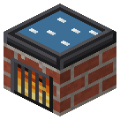

Солеварня
Эпоха 1Ферма

стоит

в работе
Вода у моря или морская вода из труб где угодно + огонь или 250 mB пара -> соль.
Вода у моря или морская вода из труб где угодно + огонь или 250 mB пара -> соль. Щёлок зольного чана -> 2 поташа (где угодно). Зольник снизу.
Параметры
| Эпоха | 1 — Ферма |
|---|---|
| Многоблок | нет |
| Привод | пар |
| Баки, mB | 8000, 4000 |
| что делает | морская вода -> соль; щёлок -> поташ |
| энергия на входе | огонь (1 уголь = 4 соли) или пар 250 mB |
| на выходе | зола |
| из чего | железные листы, кирпич, печь |
Числа
| солеварня: пар | 250 mB |
|---|---|
| солеварня: партия | 400 тик |
| солеварня: щёлок на партию | 1000 mB |
| солеварня/выпарной: поташ с партии щёлока | 2 шт |
Кто кормит
- Щёлок ← Зольный чан
- steam ← Парогенератор АЭС
- water ← Артезианская скважина
Кого кормит
- Поташ → Селитряница
- Соль → Кирпичная реторта
Как устроено (из кода)
Солеварня: выпаривание морской воды на железном противне. Пресная вода соли не даёт: простая вода годится только в биомах океана и пляжа; морская вода (насос у моря, трубы) - где угодно. Партия: 1000 mB воды + 20 с огня (1 уголь = 4 соли) или 250 mB пара -> 1 соль. Щёлок (A2, 1.56.25): тот же противень вываривает щёлок из зольного чана -> POTASH поташа на LYE mB (в любом биоме) - так поташ и варили: "pot ash", зола из котла. Слоты: 0 топливо, 1 соль/поташ (выход), 2 зола (выход). Баки: 0 вода/щёлок, 1 пар.